Biology Blog
Thank you for coming to Cole Lyman's Biology Blog. This blog was designed to relfect the IB Biology Objectives so that those that are taking the course can better understand the lessons and therefore do better on the IB exam. If you have any questions you can email me at colelyman@shortmail.com. This Blog is based off of the IB objectives and Pearson Higher Level IB Biology.
Transport in Angiospermophytes Objective-9.2
Click link above to hide/unhide the following post
Posted by Cole | Filed under: Plant Science, 9.2
Roots and Angiosperm Transport
In order to understand how roots are structured one must realize the purpose of roots. The purpose of roots is to absorb water and minerals for the plant. Now that the purpose of roots is understood, we can discuss the structure. In order for roots to uptake as much water and minerals as possible, it must maximize its surface area. Roots do this by having roots hairs and by branching out. It is interesting to note that by utilizing root hairs, roots triple their absorbtion of materials.
Movement of Materials into the Roots
There are various ways for water and minerals to move in to the roots. There are three main processes that accomodate to this. They are:
- Diffusion of mineral ions and mass flow of water
- Mutualism, fulgal hyphae aiding in the transportation of minerals and water
- Active trasnportation, using ATP (or some other energy source) to move minerals/water into the root
Active Transportation for the Movement of Ions into the Roots
There are two main reasons why a root must utilize active transportation to move ions into the root. Ther first reason is because the concentration of the ion in the root is too high (the ions move into the root 'by themselves' because the concentration is lower in the root than in the outer soil, the concept of diffusion). The next reason why a root cell may use active transportation in the search for ions is because the ions can't diffuse across the phospholipid bilayer without assistance from a transport protein embedded in the membrane of the cell. The transport protein basically is just a channel in which an ion can pass through.
How Does Active Transportation Work?
Good question. First a protein pump is involved and is used to pump hydrogen ions outside of the cell. Next a negative charge is created in the cell due to the higher hydrogen ino concentration outside of the cell. The hydrogen ions are then diffused back into the cell. The hydrogen ions moving back into the creates what is called a membrane potential. This is used as potential energy to move ions into the cell.
Structural Cells in Angiospermophytes
Terrestrial plants support themselves using thickened cellulose, cell turgor and lignified xylem. Cellulose is the material that is usually found in plant cell walls and what makes plant cell walls tough. Cell turgor pressure is the pressure of water 'pushing' outwards of the cell. Turgor pressure is what keeps guard cells in the stomata open. And lignified xylem is in essence rings of ligin wrapped around the xylem tubes that helps keep it strong.
Transpiration
Transpiration is simply water vapor exiting through pores in leaves or other parts of the palnt (most notably stomata pores). It's that easy!
Movement of Water Throughout the Plant
Water moves through the xylem from the roots to the various other parts of the plant by what is called the transpiration stream. All this basically means is that as water transpires through the stomata (or other pores in the plant) then more water is 'pulled' into the roots. Water moves up the xylem tubes by the characteristics of cohesion and adhesion in water. Cohesion is the characteristic of water molecules (or any type of molecule for that matter) sticking to one another. Adhesion is the characteristic of water molecules (or other molecules) sticking to other substances. One last note on the structure of xylem tubes is that they have holes all along the whole length of the tube so that water can permeate into parts of the plant other than the end of the tube.
Guard Cells
Guard cells are the cells that surround the stomata, and they open and close it. They do this by the use of abscisic acid. The basic mechanism of the opening and closing of guard cells is turgor pressure. When the turgor pressure is high the guard cells are open and whenit is low they are closed. Now the trick is to understnad how the turgor pressure is regulated; this is where the abscisic acid comes in. Potassium ions are responsible for the direct movement of water in and out of the guard cells. When potassium ions move out of the guard cells (passively) water leaves (and closes the cells); when potassium ions move into the guard cells (actively) water enters ( and opens the cells). Abscisic acid is produced by the roots in times of water deficiency and cause potassium ions to leave the guard cells. On the other hand light from the b;ue spectrum can activate ATP-driven proton pumps to pump in potassium ions.
Abiotic Factors and Their Effect on Transpiration
Abiotic factors are factors that are non-living that have an effect on transpiration, the loss of water vapor through pores in a plant. These factors are (and the reasoning behind them):
- Light- increases transpiration. Helps make the water evaporate faster therefore causing more water to exit the stomata.
- Temperature- (high temperature) increases transpiration. Also helps make the water evaporate faster therefore causing more water to exit the stomata.
- Wind- increases transpiration. This is due ot the fact that the water vapor is in essence 'moved away from the pore' by the wind so that more can exit.
- Humidity- decreases transpiration. This is because of the fact that there is a lot of water in the air already, it will be difficult to 'put more water' in the air.
Adaptations of Xerophytes to Reduce Transpiration
Xerophytes are plants that live in arid climates (climates with no to little water) so they must conserve as much water as possible. There are four main adaptations that xerophytes use to prevent water loss due to transpiration.
- Spines- have very few stomata pores but still let CO2 to enter and O2 to exit.
- Hair- small hairs that surround the stomata pores and help reduce the loss of water vapor because the water collects on these hairs.
- Tickened waxy cuticle- a thick outer coating that protects the leaf from any water loss from the top sides of leaves.
- Reduced or rolled leaves- smaller leaves means fewer stomata pores and rolled leaves mean there is less surface area available for the sun to heat up and therefore there is a reduction in the loss of water from transpiration.
Reply To This Post | January 3, 2012
Plant Science Objective-9.1
Click link above to hide/unhide the following post
Posted by Cole | Filed under: Plant Science, 9.1
Structure of a Typical Plant Stem
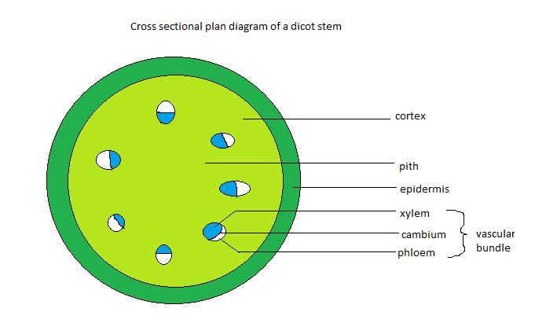
Image courtesy of http://2.bp.blogspot.com/-UXrkAwJvcc0/ThEPzROeenI/AAAAAAAAABQ/7H70eaLhXFw/s400/Untitled.png
{kind=link}
The image above is a representation of a cross section of a typical plant. It includes the vascular bundles, which are comprised of: xylem, phloem, and the cambium; the cortex (or cork), the pith, and the epidermis. The epidermis is the most exterior part of the plant and protects the plant. The cortex is another name for the cork. The cork is, for our purposes, the 'stuff' surrounding the vascular bundles. The vascular bundles are made up of xylem, phloem and the cambium. Xylem is the dead tissue that transports water from the roots to the leaves. Phloem is the living tissue that transports nutrients (products of photosynthesis)from the leaves to other parts of the plant. The cambium is simply the structure separating the xylem and the phloem within the vascular bundle.
Structure of a Typical Plant Leaf
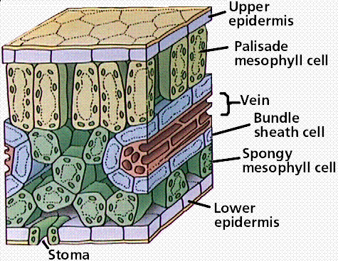Image courtesy of http://www.emc.maricopa.edu/faculty/farabee/BIOBK/C3leaf.gif
{kind=link}
The illustration above shows the structure of a common leaf, isn't it just gorgeous? <Sarcasm>. It is made up of a waxy cuticle on the upper side of the leaf (not shown in the illustration), the upper epidermis, palisade and spongy mesophyll (which have chloroplasts), vascular bundles composed of xylem, phloem, and cambium (also called a vein), lower epidermis, and stomata (with accompaning guard cells on either side which are not pictured). The function of the waxy cuticle is to protect the plant from water loss due to evaporation. The function of the upper epidermis is to protect the leaf. The function of the palisade mesophyll is to undergo most of the photosynthesis within the leaf because this is where the light directly hits making it a perfect environment for photosynthesis. Also the cells in the palisade mesophyll layer are tightly packed which optimizes light absorbtion. The spongy mesophyll's function is to undergo gas exchange because the cells are loosely packed and are next to the stomata. The function of the stomata is to let gas in and out of the cell for photosynthesis. Water vapor can also move through the stomata (which is why they are usually closed during the day, to prevent water loss). The functions of the vascular bundles are discussed in the paragraph above.
Comparing the Structure of Monocotyledons and Dicotyledons
| Monocotyledon | Dicotyledon |
|---|---|
| One cotyledon | Two cotyledon |
| Vascular bundles are randomly spread throughout the stem | Vascular bundles are arranged in a ring throughout the stem |
| Parallel venation in leaves (all of the veins in the leaves run parallel to each other) | Reticulated venation in leaves (the veins in the leaves are 'randomly' spread throughout the leaf) |
| Floral organs are in multiples of 3 | Floral organs are in multiples of 4 or 5 |
| New roots form from the stem | New roots form from pre-existing roots |
Modifications of roots, stems, and leaves
Roots
There are only a couple different modifications of roots avaliable to plants. They are:
- Prop roots- thick adventitious roots that grow from the lower part of the stem and brace the plant. Example: Corn
- Pneumatophores- produced by plants that live in wet places. They extend above the soil or water and facilitate in oxygen uptake. Example: Mangroves
- Buttress roots- large roots that develop near the bottom of tree to provide stability. Example: Fig tree
Stems
There are some multifarious stem modifications possible in plants. They are:
- Bulb- vertical underground stems that consist of enlarged bases of leaves that store food. Example: Onion Do not confuse this as a root!
- Tuber- horizontal underground stems that are modified as carbohydrate-storage structures. Example: Potatoe Do not confuse this as a root!
- Rhizome- underground stems that run parallel to the ground and shoot up a new plant. Example: Ginger plant Easily confused with Stolon
- Stolon- above ground stems that run parallel to the ground and shoot up a new plant. Example: Strawberry Easily confused with Rhizome
Leaves
There are many leaf modific... You've heard it before, here is the list
- Tendrils- leaf structures that coil around objects to aid in support and climbing. Example: Pea plant
- Reproductive leaves- produce itsy bitsy little plants along the leaf margins, which then fall to the ground and take root and grow. Example: Kalanchoe plant
- Bracts of floral leaves- colored modified leaves that surround flowers and attract insects for pollination. Example: Poinsettia
- Spines- modified leaves used for protection, they reduce water loss and also carry out photosynthesis. Example: Cactus
Meristems
Meristems are the location of growth within a plant. Meristems are totipotent, which means that the cells within have not specialized yet; in other words the cells are blank. Dicotyledionous plants have both apical and lateral meristems. Apical meristems grow height wise and can be considered primary growth while lateral meristems grow width wise and can be considered secondary growth. An example of a lateral meristem is the cambium. Lateral meristems add xylem and phloem tissue while apical meristems form leaves and flowers.
Tropism
Tropism is the directional movement in response to an external stimuli whether it be light, water, or some other factor. Positive tropism is when a plant moves towards a stimuli and negative tropism is, you guessed it, when a plant moves away from a stimuli. Phototropism is plant movement in response to light. "What causes this movement?" asks the bemused Biology Student; "Well it is quite simple young one." replies the adept abecedary. The movement is due to auxin. Auxin is the hormone that promotes growth within a plant. In a perfect environment with a light source directly above the plant; the plant would have a (figurative) line of auxin running directly down the middle of the stem. This perfect line would mean that the plant would grow directly up. Say that the light source changes to the right side of the plant. This means that the auxin would shift to the left side of the plant in order for the plant to bend towards the right. The auxin is carried by enzymes called auxin efflux.
Reply To This Post | November 13, 2011
Photosynthesis Objective-8.2
Click link above to hide/unhide the following post
Posted by Cole | Filed under: Photosynthesis, 8.2
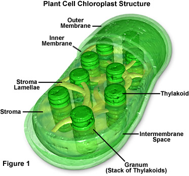Image courtesy of http://envorganelles.wikispaces.com/file/view/chloroplastsfigure1.jpg
{kind=link}
This image is a chloroplast, where both stages of photosynthesis occurs. It is comprised of thylakoids (the little round discs that are stacked), grana (stacks of thylakoids), inner and outer membrane, and the stroma (the space inside of the inner membrane).
Stages of Photosynthesis
The stages of photosynthesis are divided into two main categories, light-dependent and light-independent reactions. The light-dependent reaction takes place in the thylakoid membrane and the light-independent reaction takes place in the stroma of the chloroplast. The stroma is not to be confused with the stoma, which is the little holes in the cuticle of a leaf that facilitate in gaseous transfer.
Light-Dependent Reactions
The light-dependent reactions, as stated above, take place in the thylakoid membrane. Integral proteins (proteins embedded within a phospholipid bilayer) are vital to the light-dependent reactions. The light-dependent reactions are initiated with light (who would have thought?) striking Photosystem II. The energy of the light splits the water, in a process called photolysis, and produces electrons, hydrogen ions and oxygen. Oxygen is given off as a waste product and the electron is charged from the light and moves into Photosystem II. The electron then proceeds to travel down the Electron Transport Chain and this allows the hydrogen ions to move against the concentration gradient into the thylakoid. The process of hydrogen ions passing against the concentration gradient through the use of an Electron Transport Chain is called chemiosmosis. After this electron has lost all of its energy then is will wait by Photosystem I but will not enter it, yet. A second photon of light hits Photosystem I and an electron enters and is passed down the Electronn Transport Chain letting more hydrogen ions to pass into the thylakoid. Then the electron from Photosystem II moves into Photosystem I and is charged by a photon of light and moves down the Electron Transport Chain letting even more hydrogen ions to pass into the thylakoid. By now the thylakoid is packed with hydrogen ions so they travel through an enzyme called ATP Sythase. The kinetic energy generated by the hydrogen ions passing through the channel in ATP Synthase phosphoralizes ADP and Pi (inorganic phosphate) into ATP. Now that the hydrogen ions have exited the thylakoid they bond to NADP+ to form NADPH.
The sole purpose of the light-dependent reaction is to generate enregy in the form of NADPH and ATP for the light-independent reactions.
Light-Independent Reactions or Calvin Cycle
The light-independent reaction starts off with carbon dioxide, which then bonds with a 5-Carbon compund called ribulose bisphosphate (RuBP) to create an unstable 6-Carbon compound. Ribulose bisphosphate is an inorganic compound while the 6-Carbon compound formed when carbon dioxide bonds with it is organic, this process of transforming an inorganic compound by adding a carbon atom into an organic one is called carbon fixation. The unstable 6-Carbon compound is broken down into two 3-Carbon compounds called glycerate-3-phosphate. At this point the glycerate-3-phosphate is acted upon by ATP and NADPH (from the light-dependent reaction) to form triose phosphate (TP). The previous reaction is a reduction reaction. After this some TP compounds exit the light-independent reaction and form complex carbohydrates and sugars such as glucose, the main goal of photosynthesis. The other TP compounds that stay are acted up by ATP and then eventually turn back into RuBP compounds to repeat the cycle.
The Effect of Chloroplast Structure on Photosynthesis
| Photosynthetic Structure | Function |
|---|---|
| a vast amount of membrane surface area | greater absorption of light |
| small space within the thylakoid | a smaller amount of hydrogen ions need to be transported across the membrane |
| stroma similar to the cytoplasm of a cell | enables an area for enzymes vital for the Calvin cycle to work |
| double membrane on the outside | isolation of functioning parts of the chloroplast and the surrounding cytosol |
Limiting Factors in Photosynthesis
The equation for photosynthesis is 6CO2 + 12H2O →light→ C6H12O6 + 6H2O + 6O2 which means that all of the reactants (6CO2 + 12H2O and also light which technically isn't a reactant but is necessary for the reaction to occur) are limiting reagents; in other words are absolutely necessary for the reaction to occur. The type and color of light is also important, due to the various pigments in the plants. There are three main types of pigments in a plant: chlorophyll b, carotenoids, and chlorophyll a. Chlorophyll b is most efficient at around the 500 nanometer wavelength (blue light) while chlorophyll a is most efficient at the 700 and 450 nanometer wacelength (red and violet light respectively). One other factor that can be limiting is temperature. The optimum temperature for most plants is at 25 degree C. Any temperature lower or higher than this, the plant is not running at full efficiency and is therefore limiting the photosynthesis.
Reply To This Post | November 2, 2011
Membranes Objective-2.4
Click link above to hide/unhide the following post
Posted by Cole | Filed under: Membranes, 2.4
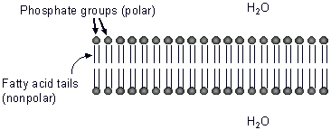Image courtesy of http://faculty.clintoncc.suny.edu/faculty/michael.gregory/files/bio%20101/bio%20101 %20lectures/Biochemistry/phospholipid_bilayer.gif
{kind=link}
This image represents the structure of a cellular membrane. This structure is called a phospholipid bilayer; phospholipid because the molecules have phosphorylated "heads" and fatty acid or lipid "tails", and there are two layers hence "bilyaer".
Unique Qualities of Phospholipids
This structure is unique/important because the phosphorylated heads are hydrophillic or "water loving" while the lipid tails are "water hating". This is why the tails face inwards and the heads face outwards, towards the water/environment. The reason the phosphorylated heads are hydrophillic is becuase they are polar and the lipid tails are hydrophobis because they are non-polar.
Structure of Individual Phospholipids
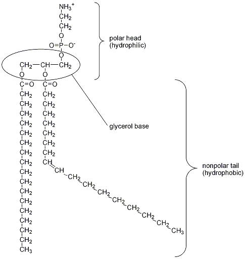Image courtesy of http://www.biosynth.com/media /verschiedene/phosphatidate.gif. This image represents the construction of a single phospholipid. The phosphoralyated head and the fatty acid tails are connected together with a glycerol base.
{kind=link}
Structure of the Complete Membrane
Imagine that the phospholipids are men in an army and they are being attacked from both sides. One unique thing about these army men is that they are extremely vulnerable in their backs so they have to stand together with their backs facing each other. In this analogy, the "army men" are the phospholipids and their fronts are the phosphorylated heads and their backs are the the fatty acid tails. The enemy of the "army men" is water, so the phophorylated heads are resistant to water but the fatty acid tails are not which is why the fatty acid tails face each other, to stay away from the water.
There are not only phospholipids in the membrane, but there are also various types of proteins and cholestrol. The cholestrol is present by the fatty acid tails, and helps keep the membrane flexible and fluid. Note: plant cells don't have cholestrol in their membranes, they use saturated and unsaturated fatty acids instead.
Membrane Protein Functions
The general protein functions within a membrane are as follows:
- hormone binding sites
- enzyme action
- cell adhesion
- cell-to-cell communication
- channels for passive transport
- pumps for active transport
Horomone binding sites in cell membranes serve the purpose of recieving hormones from the environment and proceeding to change the shape of the protein and then deliver a message to the cell. The embedded enzymes in cell membranes help catalyze reactions on the interior and exterior of the cell. Cell adhesion is just cells attaching to their environment or other cells. The cell-to-cell communication is exactly what is seems. The communication that cells usually "say" to each other is mainly what type of cell they are. Channels for passive transport enable some substances through the cellular membrane that are either too large or not molcularly suited to pass through the cellular membrane independently. Active transport is for substances that have to move in and out of the cellular membrane in large numbers, quickly or against the concentration gradient.
Passive and Active Transport
Passive and active transport are the two main ways substances enter and exit a cell. Passive transportation does not require any energy (ATP) at all and active transportation requires energy (ATP). Energy is required for active transport because the substance is moved against the concentration gradient, meaning that there is more (comparitively) substance inside the cell than there is outside, but substance is still being moved in. In the aforementioned scenario if the substance were being moved with passive transportation, the substance would not move inside of the cell because there is more inside than outside, in other words the substance is not at equilibrium.
Eukaryotic Cells Objective-2.3
Click link above to hide/unhide the following post
Posted by Cole | Filed under: Eukaryotic Cells, 2.3
Eukaryotic cells are what make up multicellular organisms like humans. You will need to be able to draw and label a eukaryotic cell. 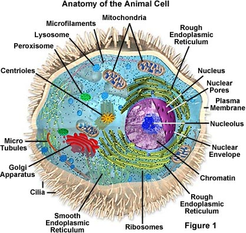 Image courtesy of http://micro.magnet.fsu.edu/cells/animals/images/animalcellsfigure1.jpg.
{kind=link}
Organelles
Organelles are the various structures inside of an eukaryotic cell that perform various functions. You can think of organelles like the organs inside of your body. The common organelles found in eukaryotic cells are:
- endoplasmic reticulum (ER)- there are actually two ERs in eukaryotic cells, rough and smooth. The difference is that the rough ER has attached ribosomes where as the smooth ER doesn't. Their function is transportation of various substances throughout the cell
- ribosomes- this is where protein synthesis (specifically translation) occurs
- lysosomes (usually not found in plants)- have a single membrane and transport enzymes
- golgi apparatus- stores, packages and modifies proteins
- mitochondria- energy synthesis (the site of cellular respiration)
- nucleus- where most of the genetic material in the cell is located
- chloroplasts (only in plant and algal cells)- the site where photosynthesis occurs
- centrosomes (in every eukaryotic cell, but centrioles are not in some plant cells)- consists of a pair of centrioles and aids in cell division
- vacuoles- used for storage and hydrolytic functions
Cytoplasm
Every eukaryotic cell has a cytoplasmic region, which is inside of the cellular membrane and surronds the organelles. Cytoplasm mainly consists of water but may have some other nutrients. The region between organelles that is fluid is referred to as cytosol.
ER
The ER is basically the "subway system" of the cell. There are tubes or channels that usually originate around the nucleus but extend to most parts of the cell. The only difference between smooth ER and rough ER is that rough ER has ribosomes attached to the exterior. Why is the ER centralized around the nucleus and why would ribosomes be attached to the exterior? Well, nature likes to take the path of least resistence. In order for protein synthesis to occur mRNA must come out of the nucleus, and the mRNA must go to a ribosome for translation to occur. So right as the mRNA exits the nucleus it can be transported by the rough ER straight to a ribosome. Cool isn't it? (not). The smooth ER also has substances embedded into it, excpet they aren't ribosomes. The smooth ER has unique enzymes embedded into its surface. Some of the functions of these enzymes are:
- production of membrane phospholipids and cellular lipids
- production of sex hormones such as testosterone and oestrogen
- detoxification of drugs, mainly occurs in the liver
- storing calcium ions for contraction in muscle cells
- transports lipid based compounds
- aid the liver in releasing glucose into the bloodstream
Ribosomes
Ribosomes are the sites of protein synthesis and have no exterior membrane. They may be found attached to the rough ER or free in the cytoplasm. Ribosomes are composed of RNA and a protein. Ribosomes have different sizes in different types of cells. The ribosomes in eukaryotic cells are larger and more dense than the ones in prokaryotic cells. The ribosomes in eukaryotic cells are said to be 80S (this is basically a size, the S stands for Svedberg units) and the ribosomes in prokaryotic cells are 70S. Ribosomes are composed of two subunits put together.
Lysosomes
Lysosomes are the "stomachs" of the cell. They digest various substances and come from the Golgi apparatus. They have one membrane and house upto 40 different enzymes inside of that membrane. They are also the "recyclying center of the cell", they digest and breakdown old or broken organelles and reuse the raw parts. The interior of the lysosome is acidic in order for the enzymes to hydrolyze large molecules.
Golgi Apparatus
The flattened sacs that make up the golgi apparatus are called cisternae. The cisternae are stacked on top of each other. The functions of this organelle are to collect, package, modify and distribute materials synthesized by the cell. On the Golgi apparatus there is a recieving side (you can think of it as a "loading dock") and a side where the completed proteins exit. The recieving side is called the cis side and is near the rough ER. The opposite side is called the trans side and this is the side where the completed proteins exit. The proteins exit in vesicles, which is basically a membrane surronding the protein. The proteins are surrounded by a membrane to prevent some of the proteins from reacting to the cytoplasm or other organelles.
Mitochondria
Mitochondria (or mitochondrion, singular) are the power houses of the cell. Mitochondria have a double membrane (this is important because of cellular respiration). The mitochondria is the location for cellular respiration. Mitochondria have their own DNA, which leads scientists to believe that they were once an independent bacteria that was very efficient at cellular respiration and were utilized (kind of like slaves) by eukaryotic cells to create ATP (bascially cellular energy). Inside of the double membrane of mitochondria there is a semi-fluid substance calle the matrix. The folds in the inner membrane are called crista. The inner membrane space is the name for the space between the two membranes. Mitochondria also produce their own 70S ribosomes, which supports the theory that they were once a bacteria.
Nucleus
Is where the DNA (and various other enzymes involved in transcription) reside. The nucleus has a double membrane that is called the nuclear membrane or nuclear envelope. There are various pores in the nuclear membrane that allow various molecules and substances passage in ant out of the nucleus. In eukaryotes DNA is wrapped around proteins called histones, these histones help keep DNA organized. A nucleosome is DNA wrapped around 8 histones with a ninth to secure it. A chromosome is a whole bunch of nucleosomes put together. Some eukaryotic cells have no nucleus or have multiple nuclei.
Chloroplasts
Chloroplasts are only found in plant and algae cells. Photosynthesis happens inside of the chloroplasts. Chloroplasts have their own DNA and 70S ribosomes, like mitochondira. Inside of the chloroplasts there are grana, thylakoids and stroma. A granum (singular of grana) is a stack of thylakoids. Thylakoids are membrane bound sacs that absorb light (the first step in photosynthesis). The stroma is a fluid like substance between the outer membrane and thylakoid membranes, similar to cytosol. There are many essentail enzymes and chemicals for photosynthesis in the stroma.
Centrosome
The centrosome is usually composed of two centrioles at a right angle to each other. The centrioles form microtubles which act as an anchor point during cell divison, and help with movement and structure. Higher plant cells have the ability to produce microtubules even though they don't have centrioles.
Vacuoles
Vacuoles are storage containers for the cell. They are formed by the golgi apparatus. Most plant cells have a very large central vacuole and maybe some smaller ones. Animal cells usually just have small vacuoles. Vacuoles can store potential food, metabolic waste, toxins and water. Vacuoles also help increase the surface area to volume ratio, which is good for large cells.
Differences Between Prokaryotic and Eukaryotic Cells
| Prokaryotic Cells | Eukaryotic Cells |
|---|---|
| DNA in a ring without protein | DNA with proteins as chromosomes/chromatin |
| DNA not protected by a membrane | DNA protected by a nuclear envelope (or membrane) |
| no mitochondria | mitochondria are present |
| 70S ribosomes | 80S ribosomes |
| no membrane bound organelles | membrane bound organelles are present |
| size is less than 10 micrometers | size is more than 10 micrometers |
Similarities between Prokaryotic and Eukaryotic Cells
- both have some sourt of outside boundary, always with a plasma membrane
- both carry out all of the functions of life
- DNA is present in both types of cells
Comparison of Plant and Animal Cells
| Plant Cells | Animal Cells |
|---|---|
| outer cell wall with a plasma membrane | just a plasma membrane |
| chloroplasts are present | no chloroplasts |
| store carbohydrates as starch | store carbohydrates as glycogen |
| no centrioles in the centrosome area | centrioles present in the centrosome area |
| fixed shape | flexible shape |
The Outermost Parts of Various Types of Cells
| Cell | Outermost Part |
|---|---|
| bacteria | cell wall made of peptidoglycan |
| fungi | cell wall made of chitin |
| yeast | cell wall made of glucan and mannan |
| algae | cell wall made of cellulose |
| plants | cell wall made of cellulose |
| animals | cellular membrane that secretes a mix of sugar and proteins that are called glycoproteins which forms the extracellular matrix |
Roles of Extracellular Components
The extracellular matrix of animal cell, the outermost part of the cell, is composed of collagen fibers and glycoproteins. THe purpose of the extracellular matrix is to anchor the cell and give the cell the ability to attach itself to other cells. The extracellular matrix also gives cell the ability to communicate with other cells.
Reply To This Post | August 5, 2011
Prokaryotic Cells Objective-2.2
Click link above to hide/unhide the following post
Posted by Cole | Filed under: Prokaryotic Cells, 2.2
What is a prokaryotic cell? Prokaryotic cells are one of two classifications of cells, the other being eukaryotic. Prokaryotic cells are the more simple of the two and are single celled. Prokaryotic cells are less than 1 micrometer in diameter.
Identifying the Ultrastructure of Escherichia coli (E. coli)
Make sure that you can identify the following parts of a prokaryotic cell:
- the cell wall
- the plasma membrane
- flagella
- ribosomes
- the nucleoid (the region that contains free DNA)
Image courtesy of http://www.the-simple-homeschool.com/image-files/prokaryote_cell_.gif. Note: be sure that you can draw and label this daigram (color is not necessary).
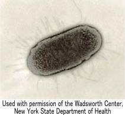{kind=link}
You will also need to be able to label a diagram similar to the one above. Image courtesy of http://www.buddycom.com/bacteria/gnr/Ecoliplil.jpg.
{kind=link}
Cell Wall and Plasma Membrane
Prokaryotic cell walls help keep the shape of the cell and help protect it. The cell walls are composed of a carbohydrate-protein complex known as peptidoglycan. Some bacteria have an additional layer of a polysaccharide outside of the cell wall which gives it the ability to adhere to surfaces like skin, food and teeth. The plasma membrane is just inside of the cell wall and is similar in structure to the plasma membranes in eukaryotic cells. Plasma membranes regulate which substances enter and exit the cell. Plasma membranes also have a role in binary fission. The plasma membrane also holds the cytoplasm of the cell in. Note: the DNA in prokaryotes is "naked" which means that it is directly in the cytoplasm of the cell, which in turn means that all processes of prokaryotes are carried out in the cytoplasm.
Pili and Flagella
Pili are hair-like growths on the exterior of cells and help with adhesion to various surfaces. There are also specialized pili called "sex pili", their purpose is to transfer genetic material between two cells. Flagella (plural) or flagellum (singular) are used for locomotion (moving around) and are also longer than pili.
Ribosomes
Ribosomes are sites of protein synthesis (translation to be specific). Basically a mRNA strand comes to a ribosome and subsequent tRNA molecules come and attach a specific amino acid to the polypeptide chain. Ribosomes look like little peieces of sands in electron micrographs (a picture from a microscope).
The Nucleoid Region
The nucleoid region is the region that genetic material, DNA and plasmids, is located. The DNA is a single circle of DNA that is long and "tangled", the DNA is not organized. There may also be plasmids in the nucleoid region. Plasmids are small DNA molecules that are seperate from the main DNA molecule adn they replecate seperately from the main DNA molecule. Plasmids are not necessary to the everyday survival of the cell but may help the cell adapt when there are changes in the environment.
Binary Fission
The process of prokaryotes dividing is called binary fission. During binary fission, the DNA is copied, then the two daughter chromosomes (the original DNA and the copy of the original DNA) become attached to different regions of the cellular membrane, then the cell divides into two identical daughter cells.
Overview of Porkaryotes
Prokaryotes are/have:
- "naked" DNA, or DNA without a membrane and is one circular chromosome
- DNA not attached to proteins
- lack membrane bound organelles
- cell wall made up of peptidoglycan
- usually divide by binary fission
- usually 1-10 micrometers in size
Reply To This Post | August 4, 2011
Cell Theory Objective-2.1
Click link above to hide/unhide the following post
Posted by Cole | Filed under: Cell Theory, 2.1
There are three main components in cell theory:
- all organisms are composed of one or more cells
- cells are the smallest units of life
- all cells come from pre-existing cells
Evidence for cell theory
The microscope has helped develop and support the cell theory. With the microscope we can see the cells that make up all organisms. Scientists have yet to find an organism that is not made up of one or more cells. Note: viruses are not considered to be living because they can not cary out the functions of life without a host. One experiment by Louis Pasteur (developer of Pasteurization, what milk and other substances go through to kill unwanted organisms) proved that all cells come from pre-existing cells. The experiment that Pasteur performed was that he bioled chicken broth (to kill all of the organisms) and then isolated it. He found that when it was isolated no new organisms appeared but when he opened the chicken broth into the open air organisms appeared.
Functions of Life
Every organism exists in a multicellular or unicellular form. In order to be classified as an organism, or living, the form must follow the listed criteria:
- metabolism- the ability to regulate all chemical reactions within an organism
- growth- the ability to produce new cells
- reporduction- the ability to create offspring
- response- the ability to react to the environment around the organism
- homeostasis- the ability to maintain a stable internal environment
- nutrition- the ability to provide nutrients to itself and to process said nutrients
Cells and Sizes
Within cells there are various subuits that make them up, called organelles. In order to view individual cells a high resolution microscope is needed. The following list is of relative sizes of substance, which are in decreasing size order:
- cells- 100 micrometers
- organelles- 10 micrometers
- bacteria- 1 micrometer
- viruses- 100 nanometers
- membranes- 10 nanometers
- molecules- 1 nanometer
- Note: you will need to know the relative sizes
In order to calculate the size of a specimen seen in a microscope you need to know the diameter of the microscope's field of vision. Then you need to use the formula magnification=(size of image)/(size of specimen) to find the actual size of the specimen. Note: this equation can be modified depending on which variables are know.
Limiting Cell Size
Why aren't humans just one large cell? Well for one, humans are eukaryotes (or multicellular organisms) and so we have different cells (ex: brain cells, skin cells, etc.). And for two the limiting factor in cell volume is surface area. The reason that surface area limits the volume of cells is because as width increases, volume increases at a much greater rate than surface area. The reason that a cell needs to have an appropriate amount of surface area is because the greater the surface area the more substances that can pass through the cellular membrane. Imagine a very large amusment park, and everyone wants to get into this amusment park but there is only one entrance and people have to enter in single file. The wait for this amusment park would be immense.In this metaphor the amusement park has a large volume but a small "surface area" (the one entrance). The same applies to cells, they need a relatively large surface area compared to volume so that substances can pass in and out easily. The ideal surface area to volume ratio is 4:1 or a cell radius of 1.25 units.
Cell Reproduction and Differentiation
Reproduction allows for the creation of offspring and to replace old or damaged cells. Most multicellular organisms are initially formed by some sort of sexual reproductionwhich forms a single cell which has the ability to rapidly reproduce and create many different types of cells, also known as an emergent property. Cells in multicellular organisms differentiate in order to create cells that are specialized in one function (ex: brain cells skin cells, etc.). Mulitcellular organisms do this by expressing some genes and not others. Stem cells have the ability to divide and differentiate along different pathways which means that a stem cell could be a heart cell, skin cell, brain cell etc. while a skin cell can only be a skin cell. One theraputic use of stem cells is to transfuse damaged bone marrow into a paitient that has damaged bone marrow due to leukaemia.
Reply To This Post | August 4, 2011
Proteins Objective-7.5
Click link above to hide/unhide the following post
Posted by Cole | Filed under: Proteins, 2.3
There are four organizations of proteins:
- Primary
- Secondary
- Tertiary
- Quaternary
The different types of proteins above are listed from most basic to most complicated. Note: in this context, structure and organization are interchangable.
Amino Acids
All proteins are made up of amino acids. All amino acids have a central carbon molecule (middle carbon molecule in the picture), a carboxyl group (the right part of the picture with 2 oxygens and a hydrogen), an amine group (the left part of the picture with 2 hydrogens) and a R group (the bottom part of the picture).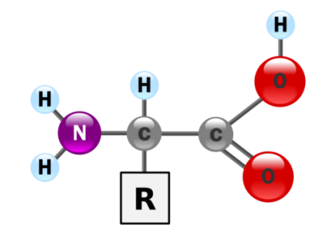For every amino acid (there are only 20) there is a different R group. Example: the amino acid "alanine" has a R group of CH3. Image courtesy of http://3.bp.blogspot.com/
{kind=link}
Primary Organization
Primary organization proteins are the most basic of all of the proteins. These types of proteins are just a chain of amino acids held together by peptide bonds (the covalent bond between the carboxyl and amine groups). The order of the amino acids makes the function and the structure of the protien different. As the picture to the left shows all of the amino acids are in a line connected by peptide bonds. Image courtesy of http://en.wikipedia.org/wiki/File:Protein_primary_structure.svg
{kind=link}
Secondary Organization
Secondary organization is when bonds form between the oxygen (from the carboxyl group) and the hydrogen (from the amine group) of the amino acids. Note: no bonds are formed between the R groups of the amino acids. There are two common configurations of the secondary structure; ɑ(alpha, not a)-helix and β(beta, not B)-pleated sheet. Both of these organizations (ɑ-helix and β-pleated sheet) have regular repeating patterns. 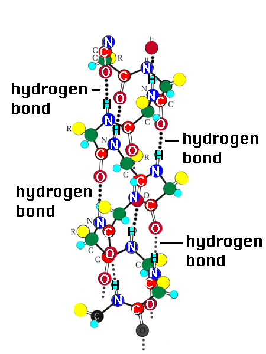 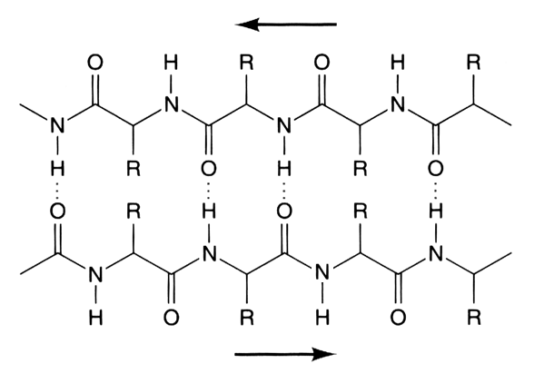
Image courtesy of http://academic.brooklyn.cuny.edu/biology/bio4fv/page/alphab.gif and http://upload.wikimedia.org/wikipedia/commons/e/e4/BetaPleatedSheetProtein.png.
{kind=link}
{kind=link}
Tertiary Organization
Tertiary organizaiton is when the polypeptide chain (primary structure protein) bends and bonds with its self. This is different than secondary organizaiton proteins because tertiary structure protiens interact (bond, fold) with the R groups, not just with the amine and carboxyl group. Tertiary organizations have a definite three dimensional structure, as demonstrated in the model. 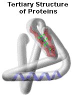 Some interactions that could cause tertiary organization are:
- sulfur atoms bonding (covalent bond) to form disulfide bonds, sometimes refered to as bridges due to their strength
- hydrogen bonds between polar side chains
- ionic bonds that are formed between positively and negatively charged side chains
- Van der Waals interactions- when a hydrophobic (repelled by water) side chain is forced inward and a hydrophilic (attracted to water) side chain is moved outward due to the presence of water
{kind=link}
Quaternary Organization
The most complex form of protein. These proteins are made up of multiple polypeptide chains (primary structure proteins) folded and bonded together in various places. Some proteins do not have a quaternary structure due to their lack of multiple polypeptide chains (these proteins only consist of one polypeptide chain). Every bond that is mentioned in the previous structures is incorporated into quaternary structure. 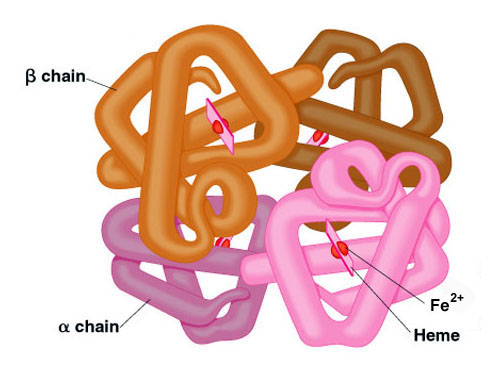 Image courtesy of http://themedicalbiochemistrypage.org/images/hemoglobin.jpg
{kind=link}
Fibrous and Globular Proteins
Fibrous proteins:
- composed of many polypeptide chains and have a long and narrow shape
- most are insoluable in water
- example: collagen, a fibrous protein found in the connective tissue of humans
- example: actin, plays a part in contracting muscles in humans
Globular proteins:
- three dimensional in shape
- most are water soluble
- example: haemoglobin, delivers oxygen to body tissues
- example: insulin, helps regulate blood glucose levels in humans
Amino Acids and Polarity
The R group is the determinating factor of an amino acid and is therefore an important variable. Amino acids that have a R group that is non-polar are hydrophobic (repels water) and amino acids that have a R group that is polar are hydrophilic (attracts water). Non-polar chains are usually found near the hydrophobic area (middle of the phospholipid bilayer) of the cell membrane while polar chains are usually found near the hydrophilic area (exterior and interior) of the cell membrane. The polar amino acids form integral proteins that make hydrophilic channels for polar substances to pas through the cell membrane.
Reply To This Post | August 3, 2011
Comments or questions?
I would love to hear from you, my email is colelyman@shortmail.com.
Share on Tumblr
Tweet
Sidebar Menu
Wise Words
"We can let circumstances rule us, or we can take charge and rule our lives from within."
- Earl Nightingale